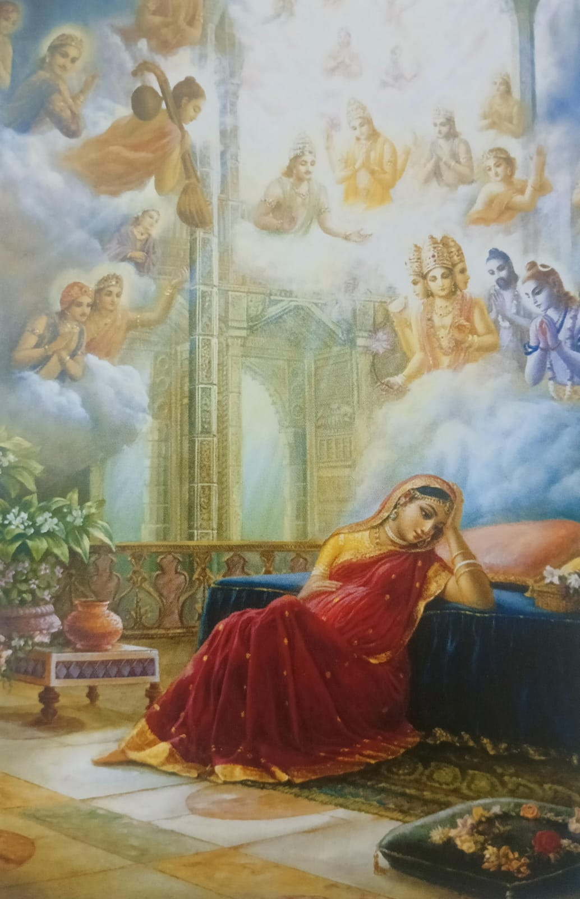

Glimpses Of Krishna’s Life❤️
Anger of Kans On His Sister
Kaṅsa’s actions following the Akashvani illustrate his fear of losing power and his ruthless attempts to control fate itself. His determination to defy destiny only sealed his downfall, as Krishna, raised away from Mathura, would grow up and eventually return to fulfill the prophecy. The Akashvani incident thus serves as a reminder of the inevitability of destiny and the triumph of divine will over human arrogance and tyranny.

Prayers For Krishna And Devaki
While Krishna was in the womb of Devaki, the gods in heaven were deeply concerned and actively praying for his safe arrival. This period was marked by tension and fear, not only for Devaki and Vasudeva but also for the celestial beings who were aware of the dire circumstances surrounding Krishna’s birth and the threats posed by Kaṅsa, the tyrannical king of Mathura.
Krishna Divine Birth
Despite the grim surroundings, the moment of Krishna's birth was extraordinary. It occurred on the auspicious night of the full moon, which was filled with divine significance. As Devaki went into labor, the atmosphere around the prison transformed. Divine light filled the cell, and the walls radiated a heavenly glow.
At the exact moment of Krishna’s birth, a miracle took place: instead of the usual cries of a newborn, the cell was filled with an enchanting sound of celestial music. The guards fell into a deep slumber, and the prison doors, which were thought to be firmly locked, swung open as if by divine will. This allowed Vasudeva the opportunity to fulfill his mission of safeguarding the child.
The Escape
Realizing the urgency of the situation, Vasudeva took the newborn Krishna, who was wrapped in a simple cloth, and set out to escape the prison. As he carried Krishna, the rain poured down, and the Yamuna River swelled, threatening to overflow its banks. Yet, at this moment, a divine miracle occurred—the river parted, creating a dry pathway for Vasudeva to cross safely. This incredible event symbolized the protection bestowed upon Krishna by the divine
Gokul Arrival
Vasudeva successfully reached Gokul, where he placed Krishna in the care of Nanda and Yashoda, his foster parents. To cover up the birth and protect Krishna from Kaṅsa, Vasudeva returned to the prison with the daughter of Yashoda, who had just given birth, and presented her to Kaṅsa. When Kaṅsa attempted to kill her, she transformed into the goddess Durga, revealing that his fears were unfounded as Krishna had already been born and was safe.
Butter Stealing
Stories of Krishna stealing butter are symbolic, as they represent his way of “stealing” the hearts of his devotees. The butter, often associated with purity and softness, reflects the pure love and devotion that Krishna draws out from his devotees. His playful acts reveal his divine nature in a childlike form, where the Divine does not remain distant or aloof but interacts with devotees in a personal and loving way. Through his mischief, Krishna teaches that spirituality and devotion need not be solemn
Vishwarupa Darshana
One day, young Krishna and his friends were playing in the fields of Vrindavan, when Balarama and other children rushed to tell Yashoda that Krishna had been eating mud. Concerned for her son, Yashoda scolded Krishna and demanded that he open his mouth so she could check for mud. At first, Krishna innocently denied eating anything, but eventually, he obeyed and opened his mouth to show her.
As Yashoda peered into Krishna’s mouth, expecting to see traces of dirt, she was instead struck by a breathtaking vision. Within his small, childlike mouth, she saw the entire universe in exquisite detail. She beheld stars, planets, oceans, mountains, and the vast expanse of cosmic creation. She even saw Vrindavan, herself looking into his mouth, and all of existence reflected within him. This vision was overwhelming and awe-inspiring, as it revealed Krishna as the embodiment of the infinite, containing all worlds within himself.
Krishna and Balaram in Gurukul
At Sandipani’s gurukul, Krishna and Balarama lived as ordinary students, embracing the simple lifestyle and rules of the ashram. They performed daily chores, fetched water, collected firewood, and engaged in tasks to help maintain the hermitage, showing respect for their teacher and fellow students. Despite his divine status, Krishna embodied humility, blending in with the other students and honoring the traditions of gurukul life.
Krishna LeaVING Vrindavan
When Krishna prepared to leave Vrindavan for Mathura, the entire village was engulfed in sorrow and disbelief. The people of Vrindavan, who loved Krishna as both a friend and protector, could not imagine life without his enchanting presence. Krishna’s departure marked the end of a joyous era for the villagers, who had grown accustomed to his divine plays, miraculous deeds, and the warmth of his companionship.
Radhika's Sorrow
When Krishna left Vrindavan for Mathura, Radha’s world was filled with overwhelming grief and longing. Known for their deep, spiritual bond, Radha and Krishna shared a love that transcended the material, embodying the purest devotion. Krishna's departure left a profound void in Radha's heart and in the lives of all the gopis (cowherd girls) and villagers, but it was Radha who felt the separation most acutely
Arrival In Mathura
Krishna and his elder brother Balarama, both still in their youth, leave their home in Vrindavan and journey to Mathura upon hearing about the grand festival organized by King Kaṅsa. Kaṅsa, the tyrannical ruler of Mathura and Krishna's uncle, has orchestrated this event as a plot to have Krishna killed, fearing a prophecy that Krishna will be his downfall.
Defeating Powerful Warrior
the wrestling match (mall-yuddha) in the court of Kaṅsa, where Krishna faces the powerful wrestlers sent by Kaṅsa to eliminate him. This battle is described in the Bhagavata Purana and other sacred texts

Kans Vadha
div>
Kaṅs Vadha (कंस वध), meaning "The Slaying of Kaṅsa," is a significant episode in Hindu mythology, particularly in the Bhagavata Purana and Harivamsa. Kaṅsa, the tyrant king of Mathura and uncle of Lord Krishna, is a powerful antagonist who has terrorized his people due to a prophecy foretelling his death at the hands of Krishna, the eighth child of his sister Devaki. To prevent this, Kaṅsa imprisons Devaki and kills her first six children. However, Krishna survives and, with his brother Balarama, eventually returns to Mathura to overthrow Kaṅsa. In a climactic battle, Krishna slays Kaṅsa, liberating Mathura from his tyranny and fulfilling the prophecy. This episode symbolizes the triumph of dharma (righteousness) over adharma (evil) and marks a key turning point in Krishna’s divine mission on earth.